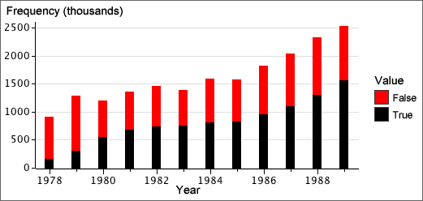

Time series
When sets of categorical measurements are recorded at successive times, time can be treated as a grouping variable.

The diagram below shows the increasing percentage of True values.
Binary variables
When the variable of interest can only take two possible values, it is called a binary variable. If the proportions in each group for one of these values are small, the bars for this category can be shown with an expanded vertical scale — no information is lost since the proportions in the other category are one minus them.